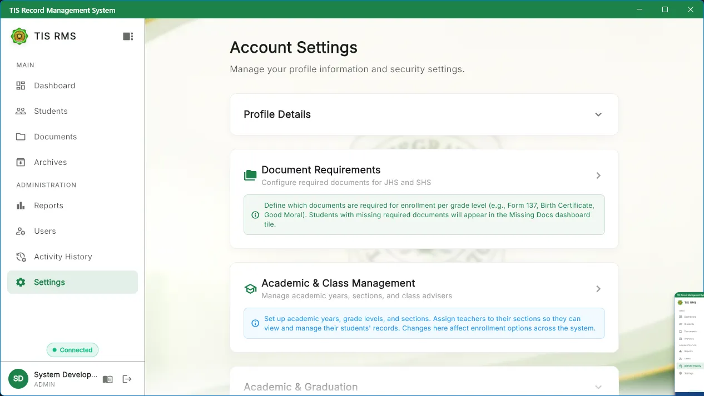
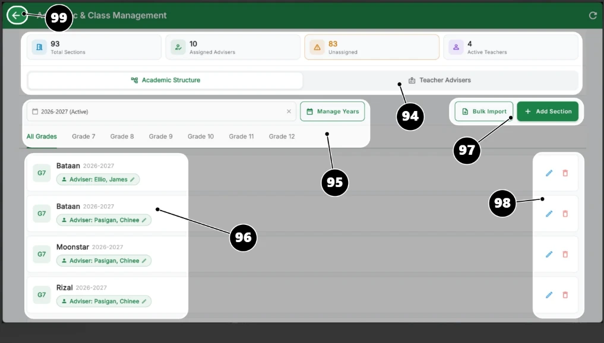
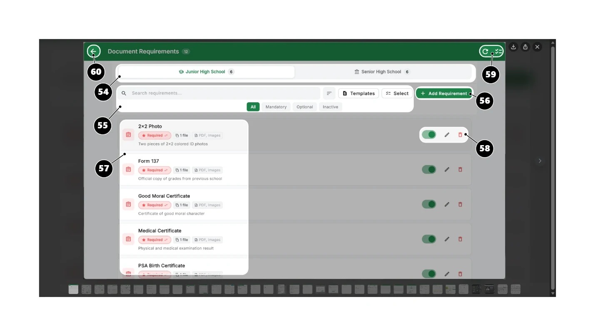
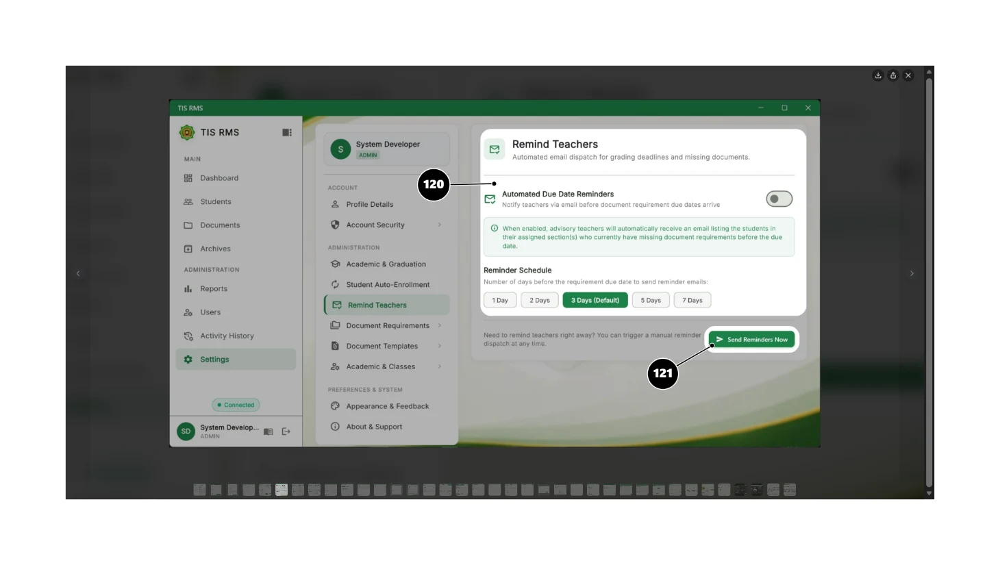
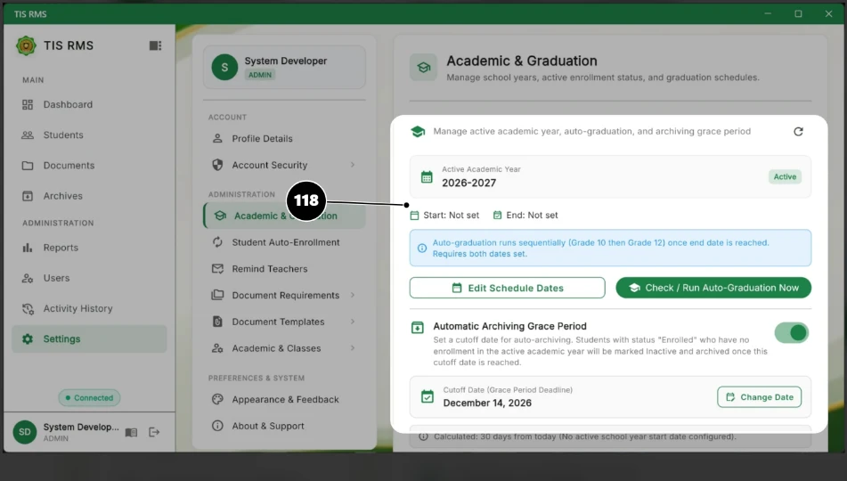
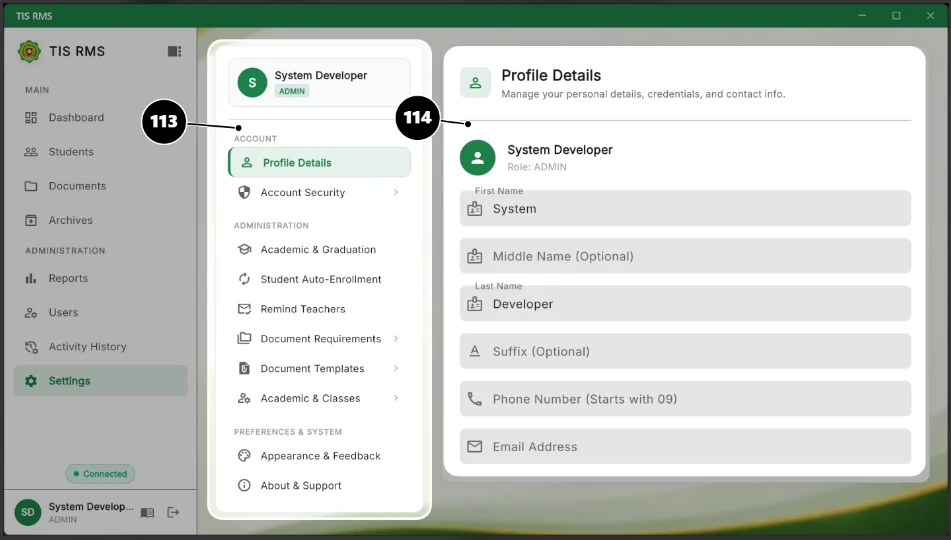
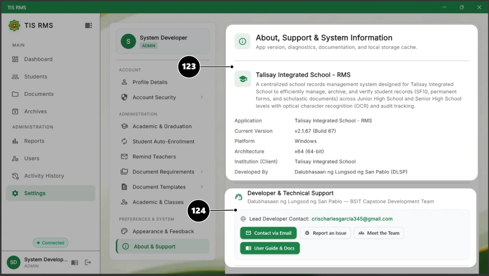

Module 9: School Settings & Document Checklist
Academic setup, dynamic document checklists, automated reminders, archiving configuration, and graduation rules.
- Academic & Class Management: Configure Academic Years, Grade Levels, Sections, and Class Adviser assignments that govern teacher permissions across the app.
- Dynamic Document Requirements: Add, edit, or toggle requirement definitions (JHS/SHS scope, mandatory flags, accepted file types, and due dates) synchronized live from the backend.
- Teacher Document Reminders: Configure automatic reminder thresholds to notify advisers about upcoming document deadlines.
- Automated Archiving & Graduation: Establish inactive student archiving grace periods and run graduation checks for Grade 10 and Grade 12 cohorts.
Module 9 is the operational engine of TIS-RMS. Administrators configure academic structures, document rules, and automated maintenance workflows, while staff can manage their personal profiles.

Academic & Class Management
Administrators manage the school's foundational academic hierarchy:
- Manage Structures: Create and modify Academic Years, Grade Levels, Sections, and Class Advisers / Teacher Assignments.
- Advisory Scope Control: Class adviser assignments dictate which sections teachers can access, view, and manage throughout the application.
- System Synchronization: Changes to academic years, grade levels, and sections are immediately reflected in enrollment forms, filters, and reports across the system.
- Graduation Support: Academic year setup underpins the automatic graduation evaluation process.

Manage Years, Grade filters, Bulk Import, + Add Section, and section edit/delete
Academic & Class Management (Academic Structure & Teacher Advisers)
All Grades, Grade 7–Grade 12), Bulk Import, or click + Add Section; edit or delete existing sections.All / Assigned / Unassigned and click Sections on any teacher to check/uncheck advisory sections (with grade filters and CANCEL / SAVE).Document Requirements Management
Administrators configure the dynamic document checklist used throughout the system:
- Add & Edit Requirements: Create new document requirements or modify existing ones.
- Enable / Disable: Enabled requirements appear in active student checklists. Disabling a requirement removes it from active checklists without deleting previously uploaded documents.
- Mandatory Flag: Set whether a document is strictly required for DepEd compliance or optional.
- Level Assignment: Restrict requirements to JHS (Grade 7–10) or SHS (Grade 11–12).
- File Constraints: Define accepted file formats (PDF, JPG, PNG) and the maximum number of file uploads allowed.
- Due Dates: Assign official submission deadlines for automated compliance alerts.

JHS/SHS tabs, Search, Mandatory/Optional/Inactive filters, Templates, and + Add Requirement
Configuring Document Requirements (Admin)
All / Mandatory / Optional / Inactive, open Templates, bulk Select, or click + Add Requirement.PDF, JPG, PNG), Maximum Files Allowed, and Mandatory Requirement toggle.Teacher Document Reminders
Administrators can configure automated email and system reminders for teachers:
- Automated Reminder Toggle: Enable or disable automatic reminders for teachers.
- Threshold Days: Configure how many days before a document due date teachers should receive alerts.
- Section Targeting: Reminders notify teachers specifically about missing requirements in their assigned sections.

Automated Due Date Reminders toggle, Reminder Schedule (1-7 days), and Send Reminders Now
Teacher Document Reminders (Admin)
1 Day, 2 Days, 3 Days (Default), 5 Days, 7 Days) or click Send Reminders Now to dispatch immediately.Automatic Archiving Configuration
Administrators can automate student record archiving to keep active rosters clean:
- Enable / Disable Engine: Toggle automated background archiving on or off.
- Grace Period Configuration: Define the number of grace days after an academic year closes before un-enrolled students are automatically archived.
- Academic Schedule Integration: The system leverages the active academic-year calendar to determine eligible records.
Automatic Archiving Grace Period (Admin)
Automatic Graduation Engine
TIS-RMS supports an automated graduation process for completing cohorts:
- Cohort Evaluation: Automatically evaluates eligible Grade 10 (Completers) and Grade 12 (Graduates) students based on the configured academic-year schedule.
- Manual Execution: Administrators can manually trigger the graduation check at any time. The system reports whether the process was executed or skipped based on schedule criteria.

Active Academic Year schedule dates, Check / Run Auto-Graduation Now, and Grace Period Cutoff
Academic & Graduation Scheduling + Student Auto-Enrollment (Admin)
Account Settings, About & Support
- Account Settings: Users can update their first name, middle name, last name, extension, phone number, and email address, as well as change their login passwords.
- About, Support & System Information: Displays official application release details, software version, and technical developer support information.

Account, Administration, Preferences navigation and personal profile fields
Profile Details, Account Security & Appearance

Version, Platform, Architecture, Institution, Developer & Technical Support actions